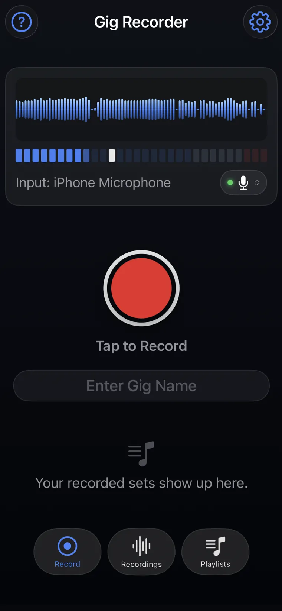
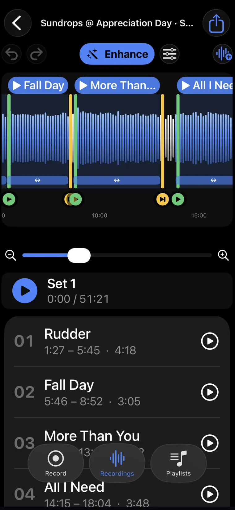
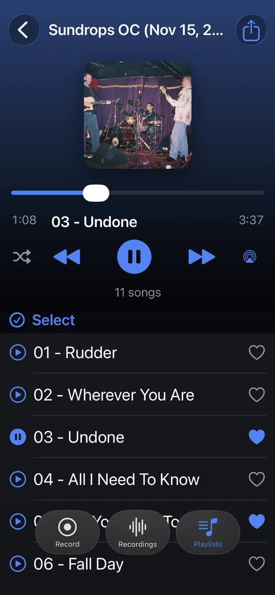
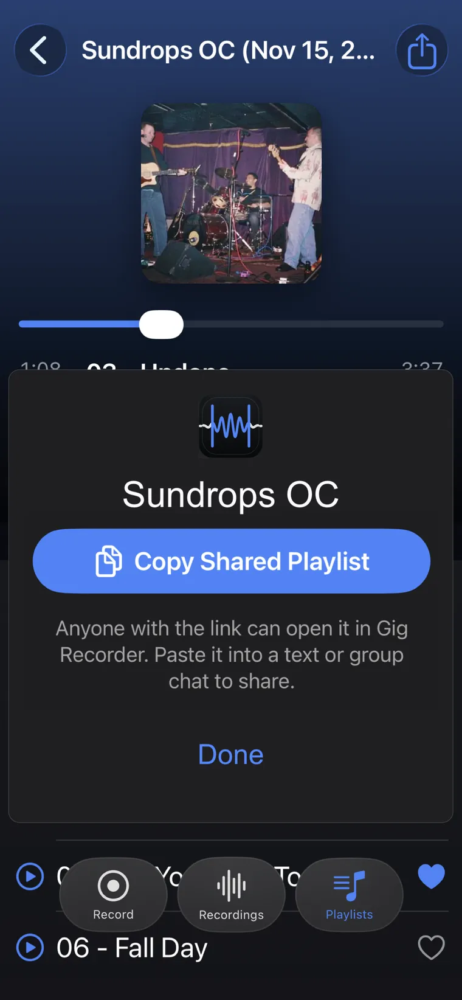
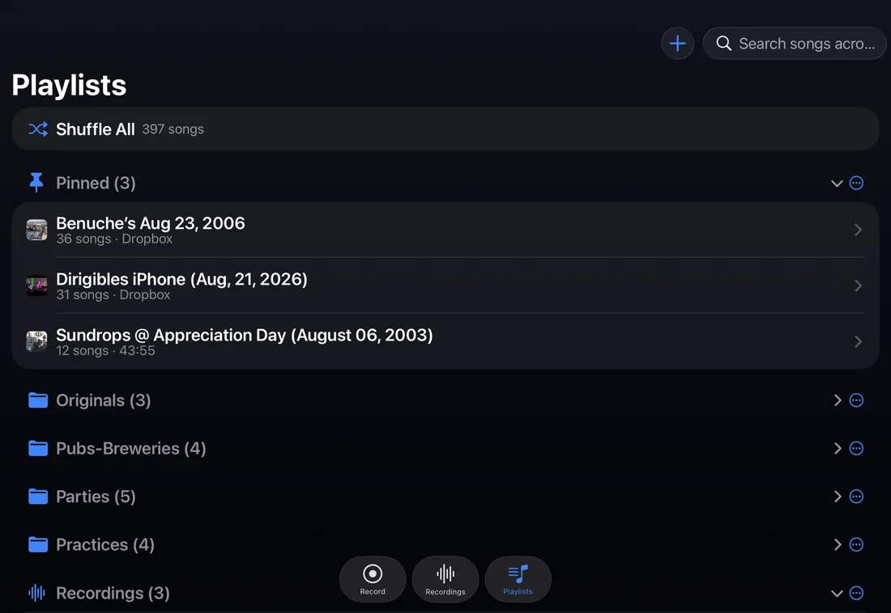
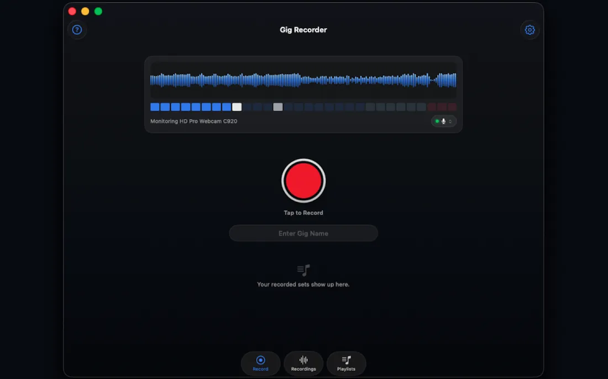

Record the moment.
Record the entire show.
Walk away with a playlist.
Gig Recorder captures your whole gig on iPhone, iPad, or Mac, then automatically splits it into named tracks within a playlist you can replay and share with your band, friends, or fans.
Currently in Apple App Review. Free to record, split, name, edit, Enhance, and build playlists.



The problem
You hit record, play a great gig, and end up with one endless file nobody ever listens back to.
Gig Recorder turns one long recording of your gig into a shareable playlist of named songs, so the night can be played back anywhere and remembered anytime.
How it works
Bar gig, open mic, rehearsal, or basement jam: record the moment.
Tap record.
Watch the red waveform and input levels, so you know it's rolling. Start it from your Apple Watch if your phone's out of reach.
Stop when the set's over.
Gig Recorder splits the recording into individual songs and names them from your private reference library. Fine-tune anything in the editor.
Play it back, or share it.
Your songs land in a ready-made playlist, already enhanced, so you can relive the night and share it with your band, friends, or fans.

Features
Everything a live recording needs, nothing it doesn't.
Splits your set into songs, automatically
No scrubbing a 90-minute file. Each song becomes its own track, ready to play.
Names your songs, and gets smarter every gig
Gig Recorder builds a private song reference library from your own recordings. Name a song once and it recognizes it next time.
Private by design
No accounts, no tracking, no ads. Your recordings and your song library stay on your device, or your own iCloud or Dropbox if you choose to sync.
Fix anything in seconds
Drag markers, rename, add or remove songs in a fast waveform editor. You're always in control of where a song starts and ends.
Make it sound like the room sounded
One-tap Enhance cleans up and levels the whole set, free. Fine-tune the Effects to taste with Pro.
Build playlists across every gig
Pull the best takes from any night into playlists, and relisten on iPhone, iPad, or Mac.
A photo for every gig
Add a photo to any gig and it follows the recording into Playlists, shared playlists, and Now Playing, so you can spot the right night at a glance.
Organize with folders
Group gigs and playlists into folders, so a season of shows or a whole tour stays tidy instead of one long list.
Favorites, custom playlists, and Shuffle All
Heart your favorite songs, build a custom playlist that pulls from any gig, or shuffle your entire library at once.
Search across every playlist
Find a song in one search, no matter which gig or playlist it's tucked into.
A guided tour, built in
A hands-on walkthrough shows you record, edit, playlist, and play the first time you open the app.
Share the night
Send tonight's set to your bandmates, friends, or fans in a tap. Export individual songs or the entire gig.
Supports multiple input sources
Use the built-in mic, or connect a USB interface or the venue's sound board and pick it as your input.
Hands-free at the gig
Start and stop recording from your Apple Watch without touching your phone.
Everywhere you play
iPhone, iPad, and Mac.
Record on whichever device is closest, and relisten on any of them. Build playlists on your iPad after the show, or catch up on the Mac at home.


Who it's for
Gigging bands and cover acts. Solo and singer-songwriter players. Open-mic hosts and regulars. Rehearsal-heavy groups. Students and teachers. Anyone who plays live music and wants every performance captured and organized, not lost.
For fans: at record-friendly shows, festivals, and open mics, Gig Recorder turns the night into a playlist you can relive, so you don't need to know the setlist to find your favorite moment. Please record only where the artist and venue allow it.
Pricing
Free to start. One small unlock.
Free
Everything you need to capture and organize a show.
- Record unlimited-length gigs
- Automatic song splitting
- Song naming that learns privately
- Waveform editor
- One-tap Sound Enhance
- Playlists across every gig
- A photo for every gig
- Folders to organize recordings & playlists
- Favorites, custom playlists, and Shuffle All
- Search across every playlist
- Multiple input sources: mic, USB, or the board
- A guided tour, built in
Gig Recorder Pro
No subscription. Buy once, use forever.
- Share sets and songs with your band, friends, or fans
- Export individual songs or a whole gig
- Sync to your own Dropbox or iCloud
- Customize Effects chain
Receiving and listening to a shared playlist is always free, whether or not you have Pro.
FAQ
Frequently asked questions
Is there an app that records a whole live set and splits it into songs?
Yes. Gig Recorder is a live music recording app for iPhone, iPad, and Mac that records an entire gig, concert set, or rehearsal as one take and automatically splits it into separate, named song tracks when you stop. You can adjust any split in the waveform editor.
How does Gig Recorder know the names of my songs?
Gig Recorder names songs using a private song reference library built only from your own recordings. Name a song once and the app recognizes it the next time you play it. Every name you confirm or correct teaches the library, so auto-naming and splitting get faster and more accurate the more gigs you record.
Does Gig Recorder use Shazam or an online song database?
No. Song recognition runs entirely on your device against your own private library. Gig Recorder never looks up your audio against a public song catalog and never sends audio fingerprints to any online service.
Is my song library or recording data shared with other users?
No. Your reference library is built from your recordings alone and stays on your device. It is never pooled with other users, shared, sold, or used to improve anything for anyone else.
Where are my recordings stored, and does Gig Recorder collect any data?
Recordings are stored on your device by default; with Pro you can sync them to your own Dropbox or iCloud. Gig Recorder runs no servers and has no accounts, no analytics, and no ads. Nothing is collected or stored for use by anyone but you. See the Privacy Policy.
Is Gig Recorder free? What does Pro cost?
Gig Recorder is free to download and free to record, split, name, edit, Enhance, and build playlists. Gig Recorder Pro is a one-time $1.29 in-app purchase that unlocks sharing, exporting songs or whole sets, Dropbox and iCloud sync, and custom Effects. There is no subscription.
Can I share a gig recording with my band or fans?
Yes, with Gig Recorder Pro. Share a set or a single song to bandmates, friends, or fans in a tap, export individual songs or the entire set as audio files, or sync everything to your own Dropbox or iCloud. Receiving and listening to a shared playlist is always free.
Does Gig Recorder improve the sound quality of a live recording?
Yes. One-tap Enhance cleans up and levels the whole recording so it sounds like the room sounded, and it's free. Gig Recorder Pro lets you fine-tune the Effects chain to taste.
What devices does Gig Recorder work on?
Gig Recorder runs on iPhone, iPad, and Mac, and you can start and stop recording hands-free from your Apple Watch.
Do I need an account to use Gig Recorder?
No. There is no login or account to record, edit, or build playlists. Sharing with bandmates uses your own iCloud, and exports go to your own Dropbox or iCloud.
Can fans use Gig Recorder to record concerts?
Yes, where recording is permitted. At record-friendly shows, festivals, and open mics, Gig Recorder splits the night into named songs, so you don't need to know the setlist to find your favorite moment. Please record only where the artist and venue allow it.
Can I use Gig Recorder to record band rehearsals or practice?
Yes. Record the whole rehearsal, get it back split into songs, fix any boundary in the editor, and, with Pro, share the takes with the band for review the same night.
Can I record from a mixer or an audio interface?
Yes. Use the built-in mic, or connect a USB interface or the venue's sound board and pick it as your input, on iPhone, iPad, or Mac.
I bought Pro on one device. How do I get it on another?
Sign in with the same Apple Account, open Settings in Gig Recorder, and tap Restore Purchase. Pro also supports Family Sharing.
How do I request a refund?
Purchases are handled by Apple. Go to reportaproblem.apple.com, sign in, and choose the Gig Recorder Pro purchase.
How do I delete my data?
Delete gigs or playlists inside the app, or delete the app to remove everything on the device. Files you exported to iCloud Drive or Dropbox are yours to delete from those services. We hold no copies of anything.
Support
Need help?
Email: gig.recorder.support@gmail.com
Include your device model, iOS or macOS version, and the app build number from Settings > About. We usually reply within two business days.